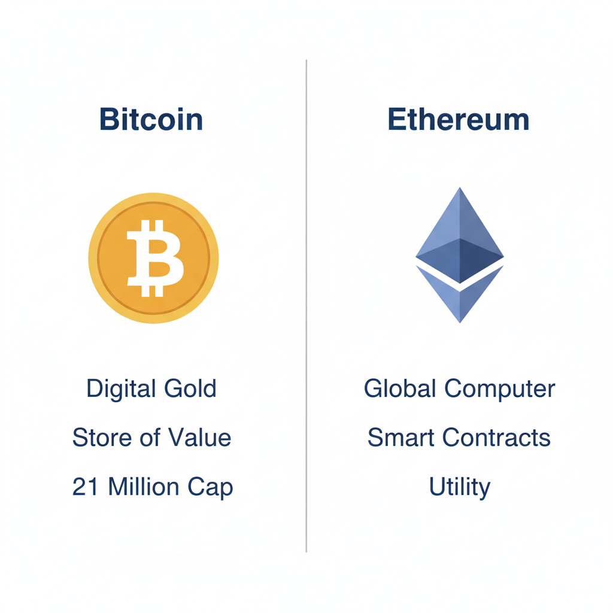
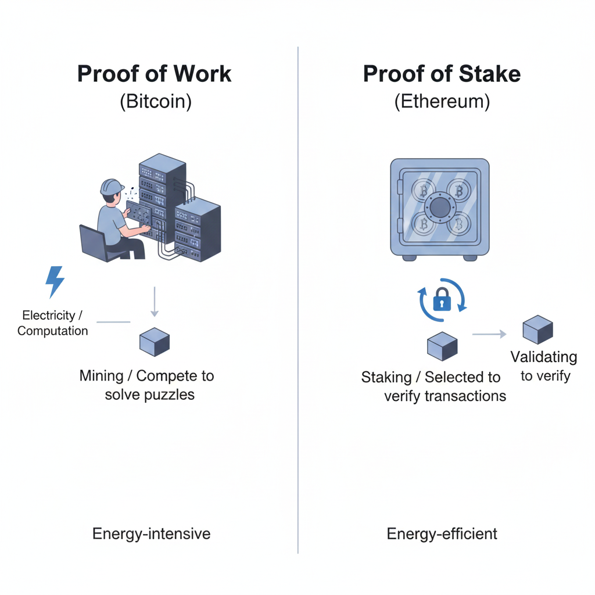
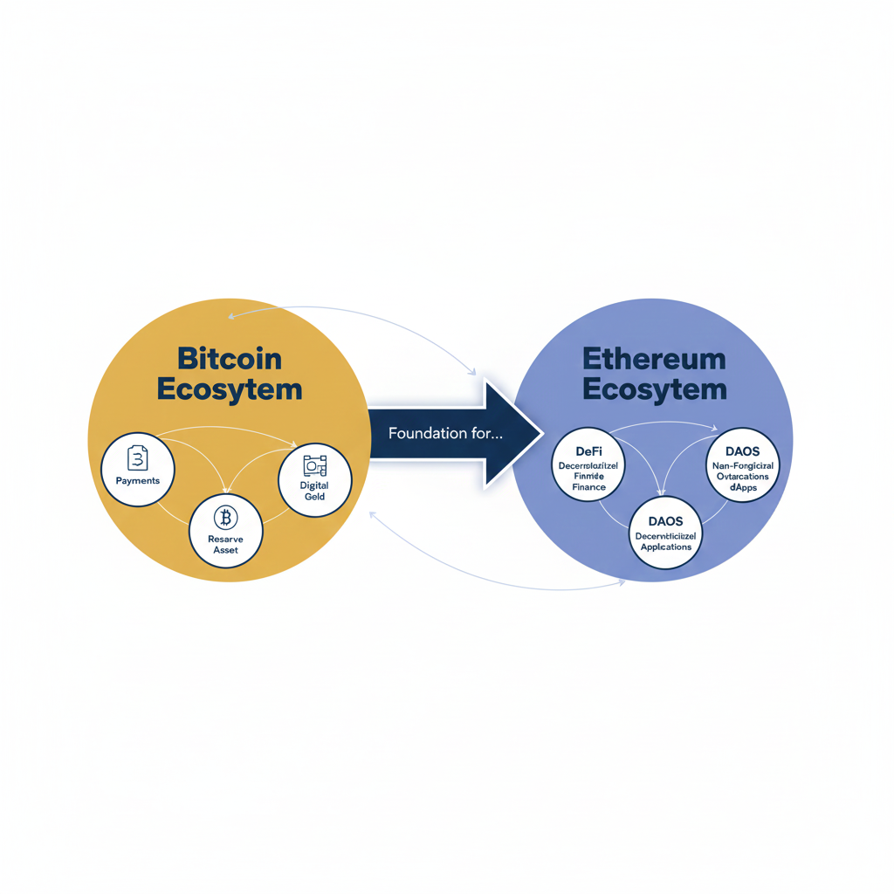

To the casual observer, Bitcoin and Ethereum may appear similar; both are based on blockchain technology, both can be traded on global exchanges, and both operate without a central authority. However, looking closer reveals that their primary functions are distinct. If Bitcoin is often described as "digital gold"—a secure store of value—then Ethereum is frequently called a "global computer" or "digital oil"—a platform designed to power an entire ecosystem of decentralized applications.
Understanding these distinctions is crucial for anyone looking to move beyond the surface level of the crypto ecosystem. This article will provide a detailed comparison, exploring their origins, how they function, their supply models, and the unique roles they play in the modern financial landscape. By examining these core differences, we can better understand why both projects have maintained such prominent positions in the industry despite their divergent paths.
Table of Contents
Origins and Primary Purpose
Bitcoin was the first cryptocurrency, launched in early 2009 by an anonymous person or group known as Satoshi Nakamoto. It emerged in the wake of the 2008 global financial crisis as a response to the perceived failures of centralized banking systems. The goal was to create a scarce, digital asset that could be transferred between individuals without the need for a bank or government intermediary. Its primary mission is to function as a decentralized alternative to traditional "fiat" currencies.
Ethereum arrived several years later, in 2015, proposed by a programmer named Vitalik Buterin. Buterin recognized that the blockchain technology powering Bitcoin could be used for much more than just tracking the movement of money. He envisioned a blockchain that was "programmable," meaning it could host and execute code. While Bitcoin’s primary purpose is to serve as a decentralized store of value, Ethereum’s purpose is to facilitate decentralized applications (dApps) through its own internal software environment.
The Store of Value vs. Utility Platform
Bitcoin’s philosophy is rooted in simplicity and security. It does one thing—securely record transactions of its native currency (BTC)—and it does it exceptionally well. This narrow focus has led many to view it as "Digital Gold," a hedge against inflation. Its value comes from its scarcity and its massive, secure network.
Ethereum, by contrast, is a utility-driven platform. Its native currency, Ether (ETH), is used to pay for the "gas" required to run the network and execute transactions. While ETH can be held as an asset, its value is deeply tied to the level of activity and innovation happening on the Ethereum network. If Bitcoin is the vault, Ethereum is the internet service provider and the software suite built on top of it.
Technical Architecture and Smart Contracts
The most significant technical difference between the two is the concept of "Smart Contracts." A smart contract is a self-executing agreement where the terms are written directly into code. Once certain conditions are met, the contract automatically executes the transaction without the need for a third party.
Programmability and the EVM
Ethereum features the Ethereum Virtual Machine (EVM), which acts as a giant, decentralized computer. Developers can write code in a language called Solidity and upload it to the blockchain. This has allowed for the creation of Decentralized Finance (DeFi) platforms, where users can lend, borrow, and trade assets automatically. Bitcoin’s architecture is intentionally less flexible to minimize security vulnerabilities, prioritizing the integrity of its ledger over the ability to run complex applications.
For more on the underlying technology, you may want to read Blockchain & Crypto Fundamentals.
Consensus Mechanisms: PoW vs. PoS
A "consensus mechanism" is how a decentralized network agrees on which transactions are valid. For many years, both Bitcoin and Ethereum used the same method, but their paths diverged in 2022 during a major upgrade known as "The Merge."
Bitcoin and Proof of Work (PoW)
Bitcoin uses Proof of Work. In this system, "miners" use high-powered computers to solve complex mathematical puzzles. This process is extremely secure but requires an immense amount of physical hardware and electricity. This high cost of entry makes it very difficult for a malicious actor to attack the network.
Ethereum and Proof of Stake (PoS)
Ethereum transitioned to Proof of Stake to improve efficiency. In a PoS system, the network is secured by "validators" who lock up (or "stake") a certain amount of Ether. Instead of solving puzzles with electricity, validators are chosen to create new blocks based on the amount of ETH they have staked. This change reduced Ethereum's energy consumption by more than 99%.
Tokenomics and Supply Models
The economic models—or "tokenomics"—of BTC and ETH dictate how new coins are created and their total supply over time. Bitcoin is famous for its hard cap of 21 million coins. This limit is hard-coded into the protocol and cannot be changed, making it a "disinflationary" asset often compared to physical gold.
Ethereum does not have a hard cap on its total supply. Instead, it uses a dynamic system where new ETH is issued to reward validators, while a portion of the transaction fees (gas fees) is "burned" or permanently removed from circulation. Depending on network activity, Ethereum’s total supply can actually decrease over time, a concept often called "Ultra Sound Money."
Transaction Speed and Scalability
Bitcoin has a block time of approximately 10 minutes, meaning it takes about ten minutes for a transaction to be officially confirmed. To handle more frequent payments, developers use "Layer 2" solutions like the Lightning Network. Ethereum has a faster block time of about 12 seconds but can suffer from high fees when the network is congested. Its roadmap focuses on "Layer 2" networks (like Arbitrum or Optimism) to bundle transactions and reduce costs.
Ecosystems and Use Cases
Bitcoin's ecosystem is largely focused on financial sovereignty and institutional adoption. It is the primary asset that large corporations and some nation-states add to their balance sheets as a reserve asset. Ethereum’s ecosystem is a hub of creativity, serving as the birthplace of the DeFi movement and the primary home for the NFT market. Ethereum is a foundational layer for a new type of internet, often called Web3.
Managing these volatile assets requires a solid plan; see Risk Management Fundamentals for more details.
Key Takeaways
- Primary Goal: Bitcoin is a store of value (Digital Gold); Ethereum is a platform for applications (Global Computer).
- Smart Contracts: Ethereum’s core feature allowing for programmable transactions; Bitcoin prioritizes simplicity.
- Consensus: Bitcoin uses Proof of Work (mining); Ethereum uses Proof of Stake (staking).
- Supply: Bitcoin has a fixed 21 million cap; Ethereum has a dynamic supply with a fee-burning mechanism.
- Speed: Both use "Layer 2" solutions to increase transaction speed and lower fees.
Conclusion
In the debate of Bitcoin vs. Ethereum, it is helpful to view them as complementary technologies rather than direct rivals. Bitcoin offers a predictable, scarce, and secure foundation for digital value. Ethereum offers an evolving playground for innovation, providing the tools needed to rebuild financial systems through smart contracts. As the digital asset space matures, both are likely to play critical, yet distinct, roles in the future of finance.
Educational Disclaimer:
This article is for educational and informational purposes only and should not be considered financial or investment advice. Investing involves risk.